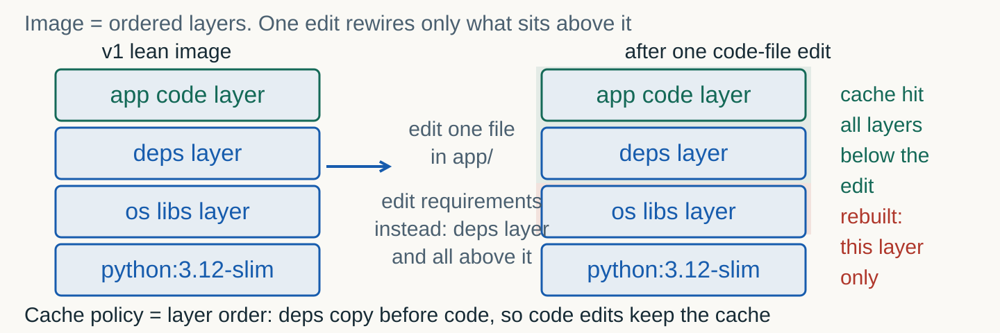
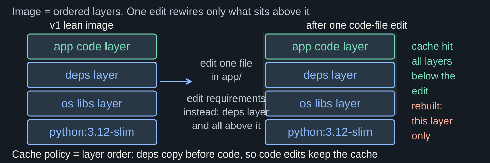
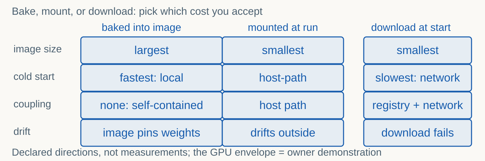

Docker for LLM inference:
the production unit
A first container in five minutes, builds measured in seconds, images weighed in megabytes — and a real OOM incident with a one-second recovery. A tiny real LLM runs on your laptop the whole way.
Works on my machine is a contract breach
Topic 09 · draft v2What you own now
The Topic 08 gateway validates, queues with honest 429s, maps errors, cancels. But it lived on whatever Python and pip state the host had.
What changes
The app becomes an immutable image with pinned dependencies. An image is a layered blueprint; a container is an ordinary process on your machine running that blueprint in isolation — same kernel, no virtual machine.
Three hosts, one answer: the image
Topic 09 · draft v2The drift
Host A: Python 3.10, old fastapi. Host B: 3.12, fresh install. Host C: a stale venv. Same code, three different services — maybe three different bugs. In production those hosts are pods, and they drift the same way.
The admission
"It worked yesterday" is not reproducibility. A floating latest tag is a deferred dependency break. The image freezes the world: one blueprint, identical kitchens everywhere.
An image is ordered layers; an edit rebuilds its layer and everything above
Topic 09 · draft v2

Which edit invalidates what
Topic 09 · draft v2| You edit | What rebuilds | Why |
|---|---|---|
| A file in the sources | The compile layer and everything above | Nothing below changed |
| The pinned source commit | The fetch layer and everything above | A new commit is new bytes |
| The base image tag or digest | The whole stack | The foundation changed — no cache above it |
First container in five minutes
Topic 09 · draft v2If Docker is new to you
docker run hello-world pulls a tiny image and runs it. Then the daily four: docker ps (what runs), docker logs (what it says), docker inspect (what it is), docker images (what you own).
What a container is
An ordinary process on your machine, isolated: its own filesystem (the layers), its own name, bounded resources — one Linux kernel, no virtual machine. That is why starts and restarts are measured in seconds.
Build speed is two different caches
Topic 09 · draft v2Layer cache
An instruction re-runs only if its inputs changed. The tooling layer caches forever; the pinned fetch layer caches until the commit pin moves; the compile layer rebuilds on any source edit. Unchanged rebuild: seconds.
Cache mount (ccache)
RUN --mount=type=cache keeps object files OUTSIDE the layers. It survives compile-layer invalidation: patch one line and the rebuild pays minutes, not the full compile. Content cache, not instruction cache.
The build, measured on a real compile
Topic 09 · draft v2The tooling layer talks to the network
Topic 09 · draft v2The trap, caught for real
The first Dockerfile draft omitted ca-certificates. apt worked fine — it speaks plain HTTP to Ubuntu mirrors. Then git fetch died: "server certificate verification failed. CAfile: none".
The rule
The tooling layer is a contract with the network: list everything the build will talk to. HTTPS needs certificates; pinned git fetch needs git + TLS. A missing package fails not where you look, but where the build first touches the wire.
Naive v0 versus lean v1
Topic 09 · draft v2| Defect in v0 | Fix in v1 | What it buys |
|---|---|---|
FROM llama.cpp:server (floating tag) | FROM llama.cpp@sha256:6d581c78… (digest) | Byte-exact rebuilds forever |
| Runs as root | Runs as uid 1000 | Smaller attack surface |
| No health declaration | HEALTHCHECK on /health | The daemon knows the service lives |
| Weights baked blindly | Weights mounted from the host | The image stays lean; Block 2 prices the alternative |
Model artifacts: bake, mount, or download — three honest trade-offs
Topic 09 · draft v2

Bake, mount, download: pick which cost you accept
Topic 09 · draft v2| Way | Image size | The price | When you pick it |
|---|---|---|---|
| bake (COPY) | +491 MB | Heavy pulls, heavy storage | Self-sufficient artifact, registry nearby |
| mount (-v) | +0 MB | Depends on the host disk | One host, a park of replicas on it |
| download (network) | +0 MB | Dominant restart term | Ephemeral nodes, shared cache |
The size of an image is the sum of its layers
Topic 09 · draft v2The size ledger: three images, three orders of magnitude
Topic 09 · draft v2| Image | Size | What lives inside |
|---|---|---|
| Our from-source runtime | 150 MB | llama-server + runtime libs, no tooling |
| Upstream llama.cpp:server | 1.18 GB | full upstream server image (unpacked) |
| vllm/vllm-openai:latest | ~10.4 GB compressed | torch + CUDA + vLLM — the production stack |
From Dockerfile to a running LLM
Topic 09 · draft v2The probe contract, unchanged across the boundary
Topic 09 · draft v2| Probe | Expected | Got |
|---|---|---|
| GET /health | 200 | 200 |
| POST /v1/chat/completions | non-empty content | "OK" |
usage.total_tokens | > 0 | 38 |
The incident: a pod with a wrong limit
Topic 09 · draft v2The setup
A replica is capped at --memory 400m. Its resident appetite is ~760 MB (491 MB weights + KV cache + buffers). Prediction BEFORE the run: what will the kernel do when the process touches a page past the wall?
The production stakes
This is the daily reality of pods: requests/limits set by humans, models loaded by machines. When the limit is below residency, the story below repeats on every deploy. In the lab you write the prediction into the journal first.
OOMKill is the kernel, not the app
Topic 09 · draft v2What you see
Exit code 137 = 128 + 9 (SIGKILL). No Python traceback, no exception — the strongest possible termination, delivered from outside the process.
What proves it
docker inspect answers "OOMKilled": true, and the log tail ends mid-model-load. Cause → evidence → fix: the discipline of the diagnose-exit TODO (level C).
Crash loop, measured
Topic 09 · draft v2| Time after start | Restarts so far | The backoff |
|---|---|---|
| 6.2 s | 5 | 100→200→400→800→1600 ms |
| 12.3 s | 7 | +3.2 s, +6.4 s |
| 18.4 s | 8 | +12.8 s |
| Kubernetes calls it | CrashLoopBackOff | 10 s → … → 5 min cap |
Restart-to-ready is a sum of named terms; a warm restart pays only the tail
Topic 09 · draft v2

Read the evidence, then size the fix
Topic 09 · draft v2The diagnosis ladder
137 + OOMKilled → cgroup limit; 1 + "manifest unknown" → tag drift; 125 → daemon refused the flags; 127 → executable not found. The journal keeps cause, evidence, fix for every drill.
The fix is sizing, not hope
Limit = resident × headroom (~1.5×). Take resident from docker stats, not from vibes: 762 MiB measured → 1200 m limit. A limit is admission control — the honest wall from Topic 08's queue, now in memory.
Back up in about one second
Topic 09 · draft v2| Restart term | Who pays it | Course record |
|---|---|---|
| Extract layers | small image = fast unpack | fractions of a second |
| Load weights | page cache is warm after the first load | near-zero extra |
| Init server + first /health | process start, model mmap | ~1.0 s total to healthy |
Security defaults, not security options
Topic 09 · draft v2What v1 sets by default
Digest pin (byte-exact), non-root uid (smaller blast radius), HEALTHCHECK (the daemon knows), memory limit (admission control). Every one is a line in the Dockerfile, and every one is a default the fleet inherits.
What the server warns about
The real log from this lab: "no API key is set and CORS allows all origins". Production adds auth, TLS and network policy — Topic 11 territory. Defaults inside the image; policies around it.
The k8s vocabulary bridge (Topic 11 preview)
Topic 09 · draft v2| This lab (Docker) | Kubernetes | What stays the same |
|---|---|---|
| container + --restart policy | pod + controller | the unit is immutable |
| exit 137, "OOMKilled": true | OOMKilled / exit code 137 | the kernel kills, same signal |
| backoff after failures | CrashLoopBackOff (10 s → 5 min) | never hammer a dying pod |
| --memory / --memory-swap | resources.limits / requests | limits are admission control |
| HEALTHCHECK | liveness / readiness probes | declared health, polled |
SBOM and the supply chain (stretch)
Topic 09 · draft v2The inventory
SBOM lists every package inside the image: OS libs, binaries, versions. One image — one document. docker scout sbom or the sbom plugin; the lab saves the inventory when the tool exists and prints an honest skip when it does not.
The three risks
A floating base tag changes bytes under your feet; unpinned sources and weights are a lottery; layers remember everything — a file deleted in layer 9 still lives in layer 8, and so does a secret.
The lab blocks at a glance
Topic 09 · draft v2| Block | The question | The evidence |
|---|---|---|
| 0 · On-ramp + layers | What is a container? What rebuilds? | hello-world journal, build-plan.json |
| 1 · Build speed | Which cache survives which edit? | build-timings.json (cold / layer / ccache) |
| 2 · Size | What do weights cost, baked or mounted? | size-accounting.json, docker history |
| 3 · Contract | Does the API contract cross the boundary? | contract-journal.json (real LLM replies) |
| 4 · Incident | Pod dies by OOM — how fast does it recover? | oom-crashloop.json, restart-economics.json |
| Stretch · SBOM | What exactly is inside the image? | sbom-summary.txt, supply risks |
What this lab does not prove
Topic 09 · draft v2Honest limits
Seconds and megabytes are yours, local, machine-dependent — the course never quotes them as engine benchmarks. llama.cpp with 0.5B Q4 shows production PATTERNS, not production SCALE. No real Kubernetes was launched — only its vocabulary.
What is next
Topic 10 scales engines across GPUs; Topic 11 puts these images under Kubernetes, where requests/limits and CrashLoopBackOff become daily life. GPU images and the vLLM fleet stay owner demonstrations.
An image is a promise
with layers.
Build it fast. Weigh it honestly. Probe the boundary.
Survive the OOM. Be back in a second. Journal everything.